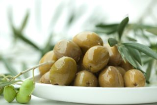

|
|---|
 Cordero de Aceituno |
 Asadillo de Pimiento |
 Arroz al Discoco |
|---|---|---|
| INGREDIENTES | INGREDIENTES | INGREDIENTES |
| Rocíe las cabezas de ajo con aceite de oliva y ase en el horno caliente hasta que estén tiernos. Abra las cabezas de ajo al medio y apriete hasta desprender la pulpa. Procese las aceitunas hasta reducirlas a puré. Retire los excesos de grasa de la carne y respe los huesos hasta dejarlos libre de carne. Pase las carne de cordero ligeramente por harina. En una sartén caliente con aceite de oliva y manteca dore la carne por ambas caras y salpimiente. Retire del fuego y unte una cara de la carne con el puré de ajos y de aceitunas. Corte la masa en cuadrados parejos y superponga 4 capas de masa pincelando cada una con manteca derretida. Coloque sobre una placa enmantecada y en el centro acomode las costillas de cordero en grupos de a cuatro. Cierre la masa juntando las puntas en el centro, ate con ciboultte blanqueado y pincele con manteca derretida. Lleve al horno caliente durante 2 a 3 minutos o hasta que la masa se dore. SALSA En una sartén derrita la mitad de la manteca con aceite de oliva y los granos de pimienta. Vierta el jugo de limón y deje reducir unos segundos. Incorpore el puré de ajos, sal, pimienta y mezcle bien. Agregue el puré de aceitunas, el caldo y deje reducir unos minutos más. Añada el perejil picado, la manteca y mezcle hasta emulsionar. | Pimientos rojos 2 Unidades Cebolla 1 Unidad Pimientos Verdes 3 Unidades Comino Cantidad necesaria Huevos 3 Unidades Sal Cantidad necesaria Ajo 1 Diente Aceitunas cantidad necesaria Aceite de oliva extra virgen Cantidad necesaria Ventresca atún 120 Gramos Vinagre de Módena cantidad necesaria Precalentar el horno a 200 ºC. Lavar todos los pimientos, secarlos bien y untarlos con aceite de oliva y sal. Disponer en una bandeja de horno junto con el ajo sin pelar y la cebolla pelada pero entera. Cuando el horno esté bien caliente, colocar la bandeja y dejar cocinar unos 20 minutos de cada lado. Mientas se hacen las verduras, cocer los huevos. Una vez que ya están asadas las verduras, retirar y pelar los pimientos. Cortarlos en tiritas y colocarlos en una fuente para servir. Picar la cebolla y añadirla a los pimientos. Luego mezclar la ventresca de atún con los pimientos. En un mortero, echar un poco de comino y machacarlos. Añadir el diente de ajo y machacarlo también con aceite, un poco de vinagre y sal. Emulsionar bien y agregar al picadillo de pimientos. Cortar los huevos duros en cuartos y añadirlos al asadillo. Por último, decorar con las aceitunas y servir. | Bróccoli 200 g Machas 100 g Cebolla de verdeo 3 Unidades Mejillones 8 Unidades Merquén 1 cda. Sal gruesa 1 cda. Salsa de soja 100 cc Agua Cantidad necesaria Vino blanco 100 cc Tubos de calamar 3 Unidades Zuchini 2 Unidades Aceitunas negras descarozadas 250 g Champignones 100 g Aceite de oliva extra virgen 50 cc Arroz blanco 250 g Romero 4 Ramas Espárragos 1 Paquete Camarones 200 g |
 wassap |
 telegran |
 |
 faceboo k |
gmail |
|---|